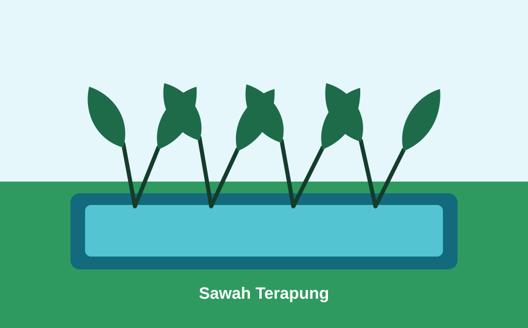
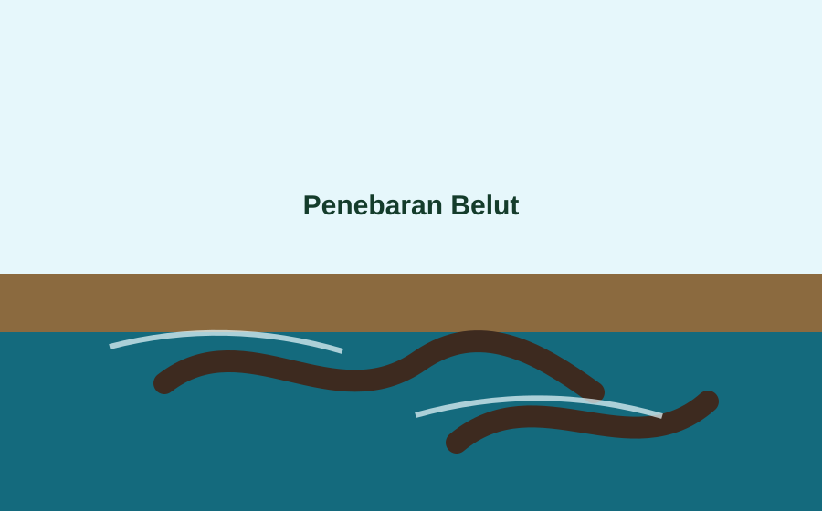
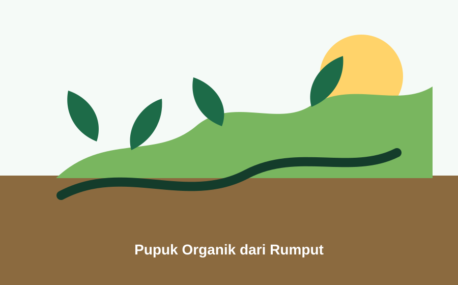
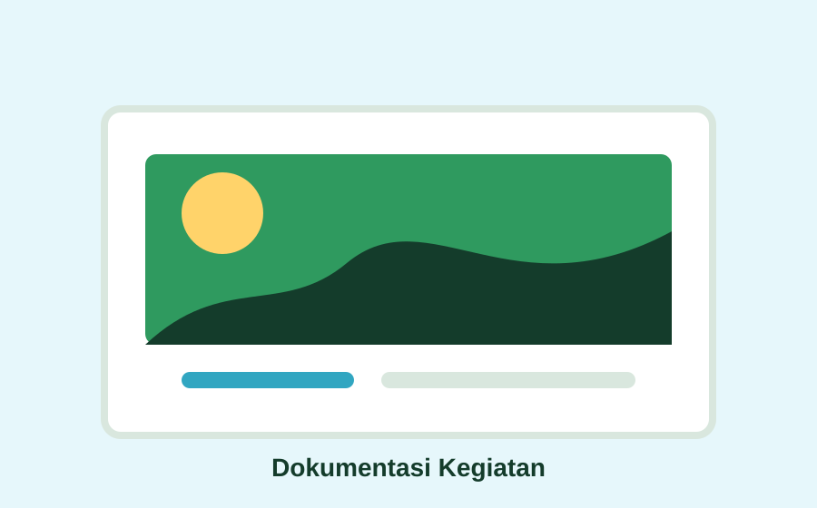

Pertanian
Padi Sawah Terapung
Demplot padi dengan media apung sebagai contoh pemanfaatan area genangan air.
Produk Unggulan
Halaman ini dapat diisi dengan produk pertanian, perikanan, olahan pangan, kerajinan, dan produk UMKM warga.
Sorotan Desa
Gunakan halaman ini untuk menampilkan produk yang paling mudah dikenalkan ke warga luar desa, mitra, atau dosen pembimbing.

Pertanian
Demplot padi dengan media apung sebagai contoh pemanfaatan area genangan air.

Perikanan
Budidaya belut terintegrasi dengan genangan air pada area sawah terapung.

Pertanian Organik
Pemanfaatan rumput sekitar desa sebagai bahan pupuk organik sederhana.

Ekonomi Desa
Ruang promosi produk makanan, kerajinan, dan jasa milik warga desa.
Tips Konten
Foto proses produksi, bahan baku lokal, harga, kontak, dan manfaat produk akan membuat halaman ini jauh lebih kuat.